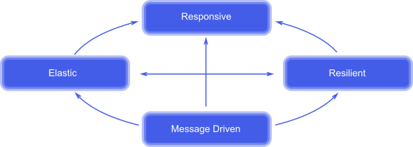

Things we'll cover:
- Reactive Programming
- Quick Concepts Overview
- Akka.Net
- Actor System
- Messaging System
- Supervision and Monitoring
- Referencing: Remote vs. Local
- Persistence
- Publisher/Subscriber
- Deployment
Things we'll cover:
It is NOT:
BUT:

//NOT Reactive
var a = 2;
var b = 3;
var c = a + b;
a = 6
console.log(c); // prints/evaluates to 5, not 9
//REACTIVE
var c = function(){
return a + b
}
console.log(c()); // prints/evaluates to 9
b = 7
console.log(c()); // prints/evaluates to 13
//NOT Reactive
var a = 2; // event: init a then set a = 2
var b = 3; // event: init b then set b = 3
var c = a + b; // event: init c then set c = eval(2 + 3)
a = 6 // event: update/set a = 6
console.log(c);
//REACTIVE
var c = function(){ // event: update/set c = function(scope){ return eval: scope.a + scope.b }
return a + b
}
console.log(c()); // event: update/set c = eval(6 + 3)
b = 7
console.log(c()); // event: update/set c = eval(6 + 7)
How do we order events in a distributed system?
Machine 1. ---------------
Machine 2. ---------------
Machine 3. ---------------
Totally Ordered: Events A, B, C all happen in the same sequence on each different machine.
Partially Ordered: Events A, B, C have a "happen's before" relationship that ensures dependency relationship.
A happens before B and B happens before C therefore A happens before C.
Total Ordering is expensive and typically only show up in a single process system.
Partial Ordering can be achieved with the use of logical or vector clocks that establish a casual relationship between events.
Two or more threads/processes are executing simulatenously, but not necessarily at the same time.
A------|___---------
B >--------|___
Two or more threads/processes are executing simulatenously at the same time.
A -----------------
B -----------------
The thread/process makes a call or request then stop's execution until the request returns.
The thread/process makes a call or request then continue's execution and possibly handles the return request at a later time.
Deadlock:
Livelock:
Starvation:
Mutable:
Immutable:
State:
Akka.Net
Actors